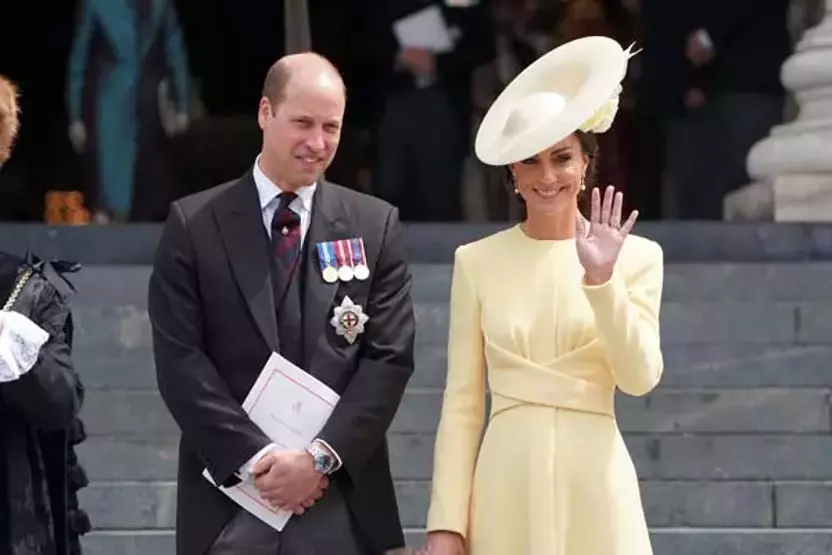

Catherine, Galler Prensesi
Galler Prensesi Catherine (d. 9 Ocak 1982, Reading, Berkshire, İngiltere), Galler Prensi William’ın eşi (2011- ) ve Britanya tahtının görünürdeki varisidir. Catherine 2022 yılında, daha önce kayınvalidesi merhum Prenses Diana’nın sahip olduğu bir unvan olan Galler Prensesi olmuştur. Diana gibi Catherine de sıcakkanlılığı ve yakınlığı ile tanınmaktadır. Genellikle kraliyet ailesinin en popüler üyeleri arasında yer alır. 2024 yılında Catherine’in açıklanmayan bir kanser türü için tedavi gördüğü açıklandı.
Catherine, Michael ve Carole Middleton’ın üç çocuğundan en büyüğüdür; kardeşleri Philippa (Pippa) ve James’tir. Anne ve babası British Airways’de uçuş görevlisi olarak çalışırken tanışmış ve 1987 yılında çocuk partileri için malzemeler satan bir posta siparişi işi kurmuşlardır. Bu girişimin başarısı ve bir aile mirası, Catherine’i bir hazırlık okuluna ve ardından Wiltshire, İngiltere’deki prestijli Marlborough Koleji’ne göndermelerini sağladı. Marlborough’da Catherine (o zamanki adıyla Kate Middleton) hem atletizmde (okulun çim hokeyi takımının kaptanıydı) hem de akademik alanda başarılı, ciddi ve aklı başında bir öğrenci olarak tanınıyordu.

Middleton 2001 yılında, bir yıl aradan sonra İskoçya’daki St. Andrews Üniversitesi ‘ne kaydoldu. Orada bir yandan sanat tarihi okurken bir yandan da yarı zamanlı garson olarak çalıştı. Andrews’den 2005 yılında mezun olduktan sonra kısa bir süre bir giyim perakendecisinde aksesuar alıcısı olarak çalıştı ve daha sonra bir dizi hayır işi yaparken ailesinin şirketinde çeşitli görevler üstlendi.
Prens William ile ilişkisi: evlilik ve çocuklar
Andrews’deyken, Middleton o sırada İngiliz tahtının ikinci sırasındaki (babası Charles’tan sonra) sanat tarihi birinci sınıf öğrencisi olan Prens William ile tanıştı. Catherine’e göre, ikisi yaklaşık bir yıl boyunca “çok yakın arkadaş” oldular. 2002 yılında birkaç kişiyle birlikte aynı eve taşındılar ve ilişkileri romantik bir hal aldı. Düşük profillerini korudular ve 2004 yılında İsviçre’de birlikte tatil yaparken fotoğraflanana kadar ilişkileri kamuoyuna açıklanmadı. Üç yıl sonra çift ayrıldı ve Middleton daha sonra “O zamanlar bu konuda çok mutlu değildim ama aslında bu beni daha güçlü bir insan yaptı” dedi. Ancak sadece birkaç ay sonra yeniden bir araya geldiler.
İngiliz medyasının çiftin evlilik planları hakkında birkaç yıl süren yoğun spekülasyonlarının ardından – bu süre zarfında Middleton “Waity Katie” olarak adlandırıldı – Kasım 2010’da ikilinin nişanlandığı açıklandı. Kraliyet ailesine katılmaya hazırlanırken Kate Middleton daha resmi olan Catherine ismine geri döndü. Kraliyet düğünü 29 Nisan 2011’de Londra’daki Westminster Abbey’de gerçekleşti. Kendisine Cambridge Düşesi unvanı verildi.
Çiftin ilk oğulları Cambridge Prensi George Alexander Louis 22 Temmuz 2013’te, kızları Cambridge Prensesi Charlotte Elizabeth Diana ise 2 Mayıs 2015’te dünyaya geldi. Catherine, 23 Nisan 2018’de ikinci oğlu Cambridge Prensi Louis Arthur Charles’ı dünyaya getirdi. Catherine kraliyet hayatına kolayca geçiş yaptı ve halk arasında hızla popüler oldu. Özellikle çocuklarla ilgili olanlar olmak üzere çok sayıda hayır kurumunda yer almaktadır. 2021 yılında Kraliyet Vakfı’nın bir parçası olan Erken Çocukluk Merkezi’ni kurdu. Catherine ayrıca ruh sağlığı sorunlarıyla ilgili çabaları da destekledi. 2017 yılında William ve kardeşi Prens Harry ile güçlerini birleştirerek ruh sağlığı sorunları hakkında farkındalık yaratmayı ve bu sorunlarla ilgili damgalamayı azaltmayı amaçlayan Heads Together girişimini başlattı. Catherine aynı zamanda tanınmış bir amatör fotoğrafçı ve sık sık aile portrelerini internette yayınlıyor.
Eylül 2022’de Elizabeth II öldü. William veliaht oldu ve babası Kral Charles III olduğunda Cornwall dükü unvanını miras aldı. Catherine böylece Cornwall ve Cambridge düşesi oldu. Kısa bir süre sonra Galler prensi unvanı William’a verildiğinde Galler prensesi oldu. Ayrıca çocuklarının unvanları da değişti. Örneğin en büyük oğulları Galler Prensi George oldu.
Ocak 2024’te Kensington Sarayı Catherine’in “planlı bir karın ameliyatı” geçirdiğini ve yaklaşık iki ay boyunca resmi görevlerine dönemeyeceğini duyurdu. Takip eden haftalarda Catherine’in sağlığı özellikle sosyal medyada yoğun bir spekülasyon kaynağı haline geldi. Mart ayında Catherine’in Anneler Günü ‘nde çocuklarıyla birlikte çektirdiği bir fotoğrafı düzenlediğini itiraf etmesinin ardından bu spekülasyonlar doruk noktasına ulaştı. Yaklaşık iki hafta sonra kendisine kanser teşhisi konulduğunu ve kemoterapi gördüğünü açıkladı. Kanserin türü açıklanmadı.